Teaching continual learner's what to prioritize next, guided by what they already know.
CoLLAs 2026
The goal of continual learning (CL) is to adapt to new data (plasticity) while retaining knowledge acquired from old data (stability). Existing methods focus on balancing stability and plasticity to mitigate catastrophic forgetting, but the impact of the order and nature of samples a network trains on remains under-explored. We argue a CL algorithm should be able to rank incoming samples by their relationship to prior data and their effect on learning.
We propose SACK (Sequentially Acquiring Concept Knowledge), a plug-and-play technique that dissects a model's categorical knowledge into fine-grained concepts, computes the relationship between previously-learned and new concepts at each experience, and uses this relationship to prioritize new samples. Across regularization, replay, and prompt-based CL methods in both class- and task-incremental settings, SACK improves accuracy, reduces forgetting, handles long-tailed distributions, sharpens semantic grounding, and yields better-calibrated, more robust models, with negligible computational overhead.
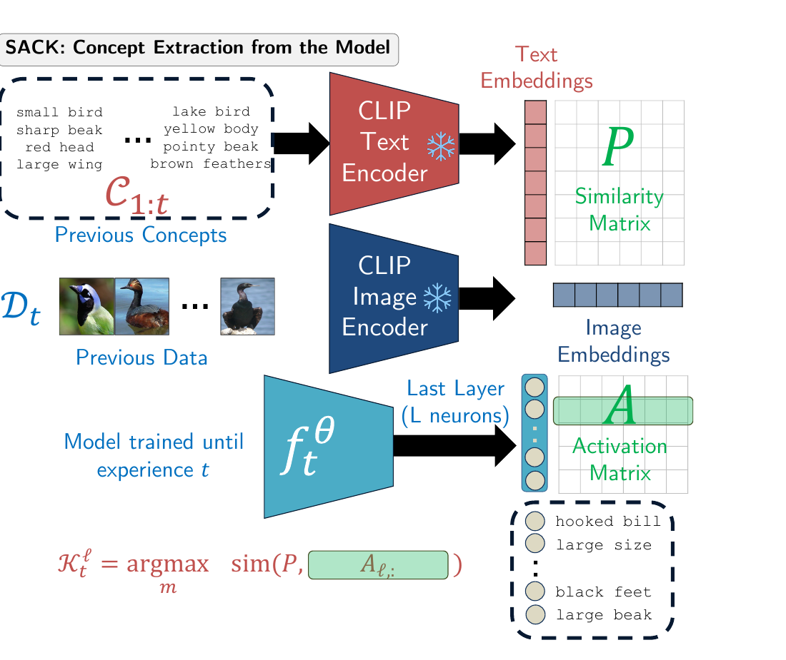
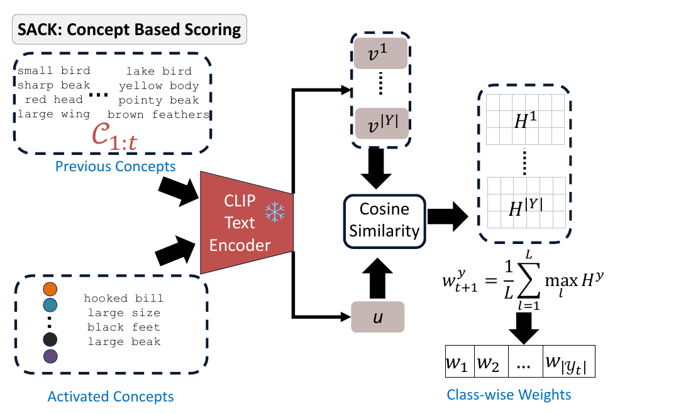
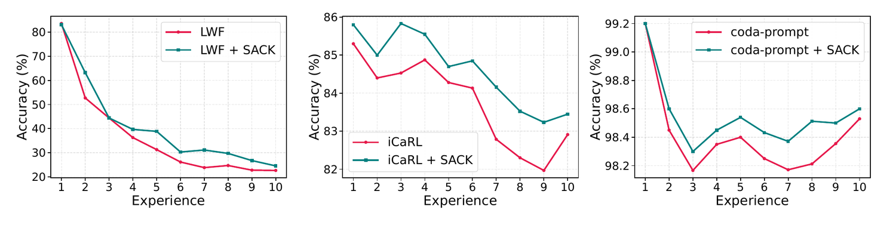
Gains scale with how much of the network the base method actually updates. Prompt-based methods learn only a small set of prompt parameters, so concept-based prioritization has comparatively little to act on; replay- and regularization-based methods that update the full backbone see the clearest, most consistent improvements, a pattern we observed across every backbone method tested.
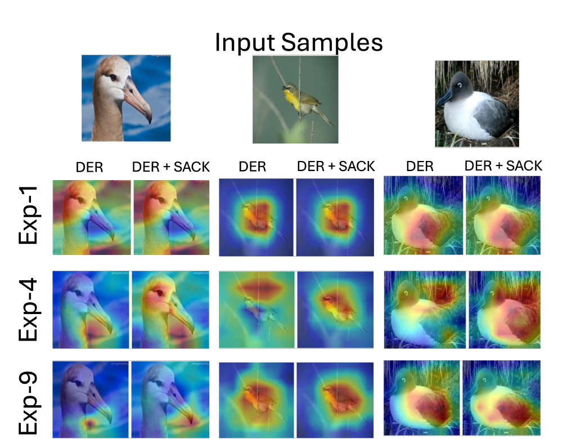
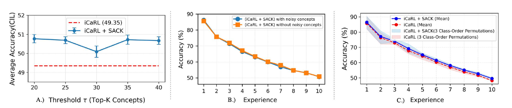
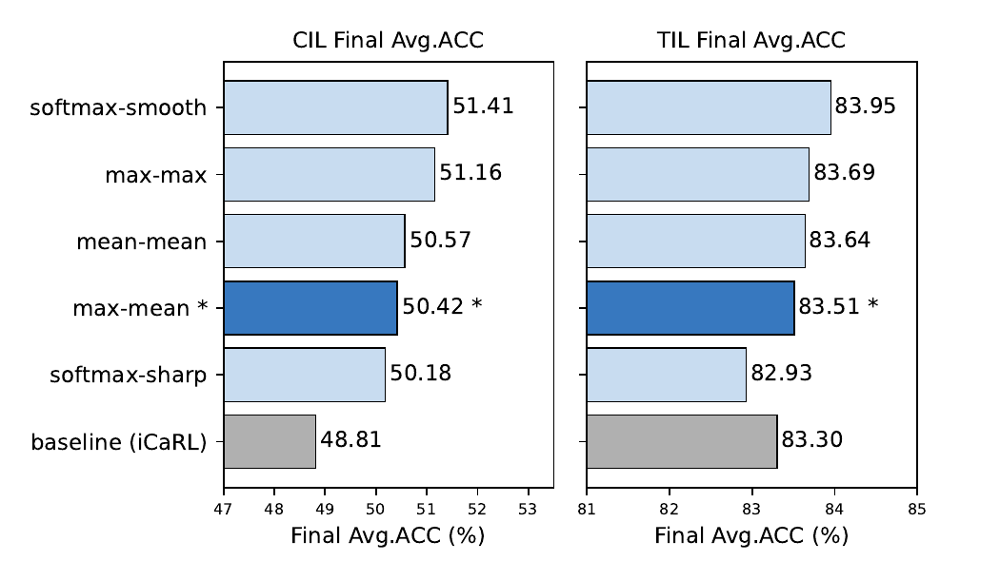
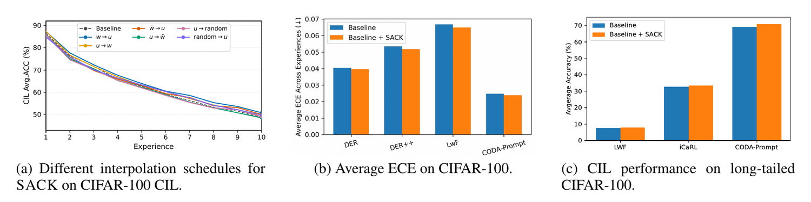
Four more checks, each run in a setting not already shown above, tell the same story from a different angle.
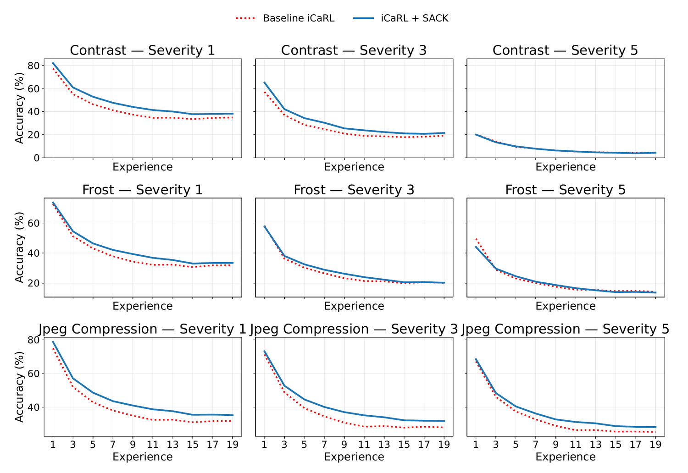
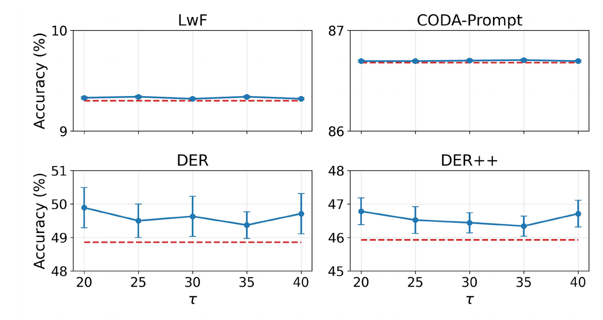
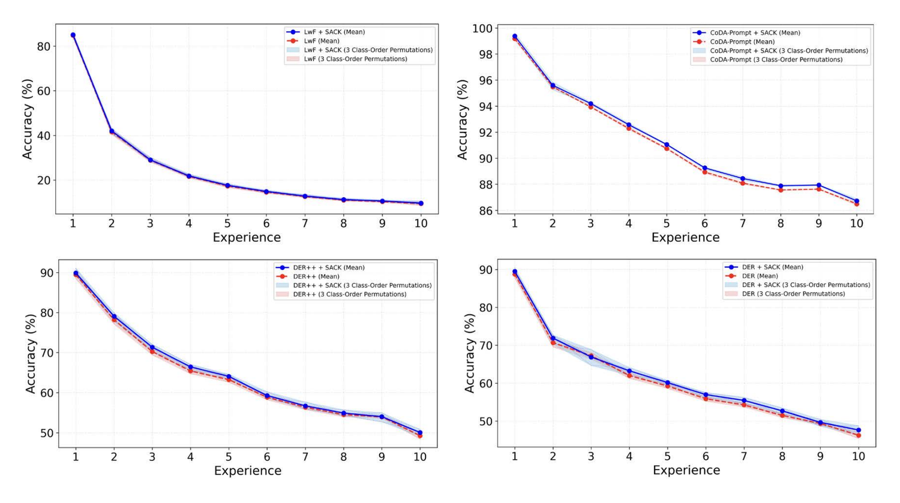
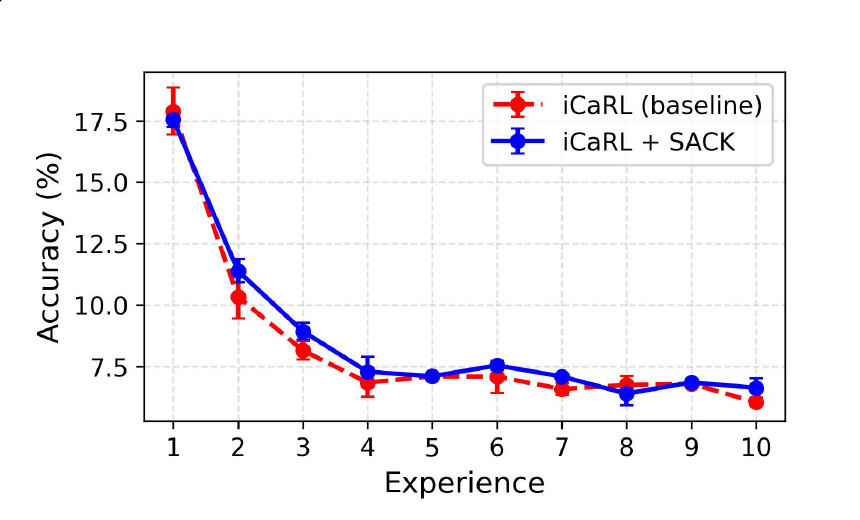
Proceedings details (volume, pages) are TBD and will be updated once available.
TBD